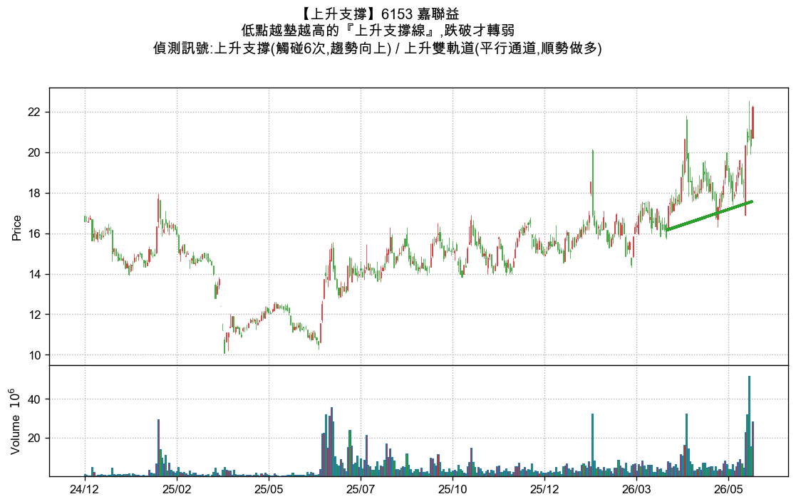
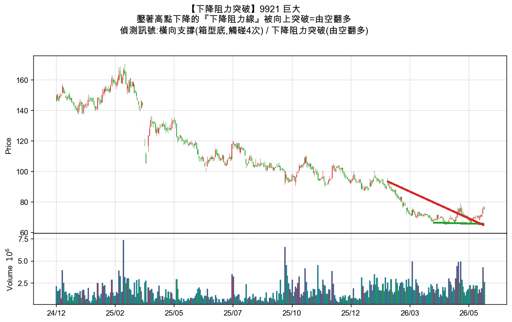
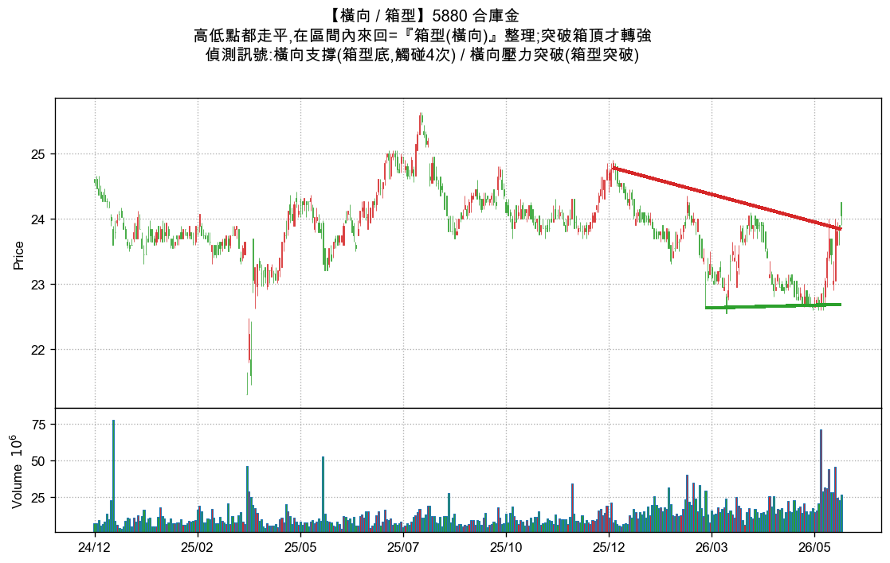
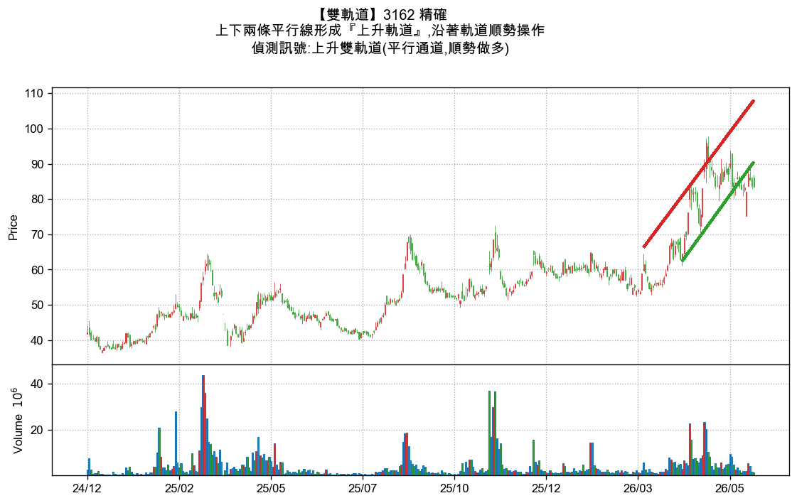

① 上升支撐
低點越墊越高
案例:6153 嘉聯益(觸碰 6 次)
綠色斜向上的線,連接「一波比一波高」的低點,代表多方持續進場、底部墊高。
做多:回測到線附近不破 → 買點;跌破線才轉弱出場。

② 下降阻力突破
壓力被攻克,由空翻多
案例:9921 巨大
紅色斜向下的線,壓著「一波比一波低」的高點(原本空方主場)。價格向上突破紅線=轉折訊號。
做多:站上紅線(突破)= 進場;這是趨勢反轉的起點。

③ 橫向 / 箱型
區間內來回整理
案例:5880 合庫金(箱底 22.7 / 箱頂 24)
上下兩條接近水平的線夾出箱子,價格在區間內來回,多空僵持、方向未明。
做多:跌箱底買、漲箱頂賣;或突破箱頂才追多(箱型突破)。

④ 雙軌道(上升軌道)
上下平行、同步向上
案例:3162 精確
上下兩條平行且同步向上的線(綠下緣=上升支撐、紅上緣=上升阻力),價格沿軌道往上爬,最強多頭結構。
做多:碰下緣(綠)買、碰上緣(紅)減;跌破下緣才出場。
說明:四條線皆由程式自動從轉折點偵測並繪製,會直接疊在每檔的 K 線圖上。綠=支撐/上升,紅=阻力/下降。